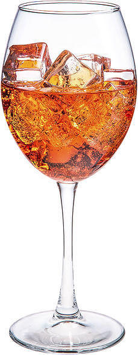

Апероль спритц

Очень популярен в качестве аперитива в области Венеция.
По одной из версий, спритц появился в Венеции в середине XIX века во времена, когда область Венето входила
в состав Австрийской империи, был изобретён австрийскими военными и первоначально представлял собой смесь вина
и газированной воды.